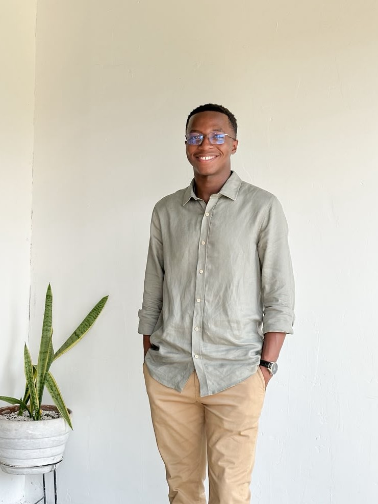
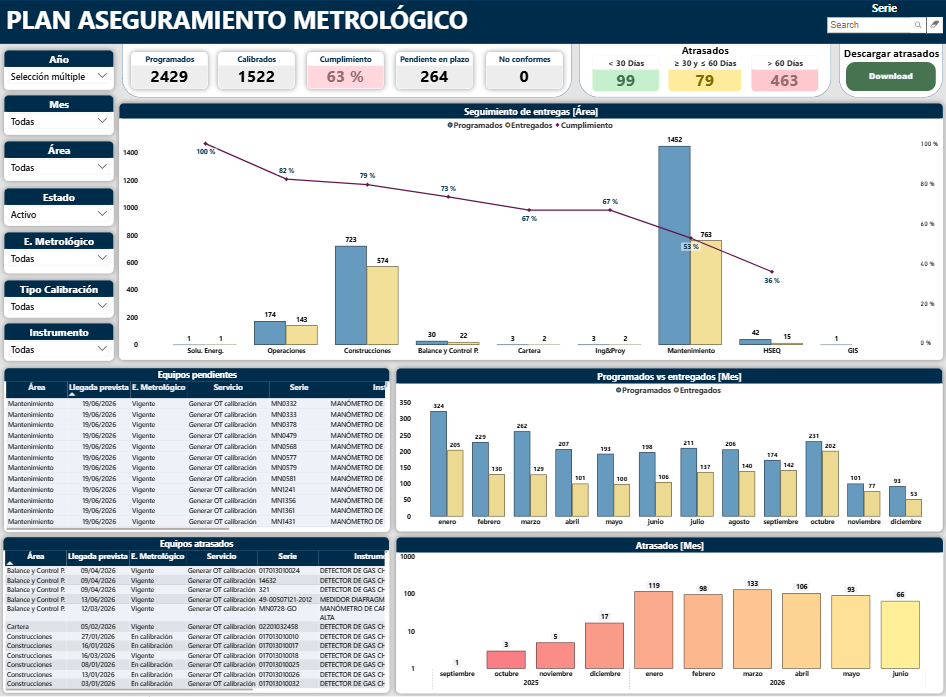
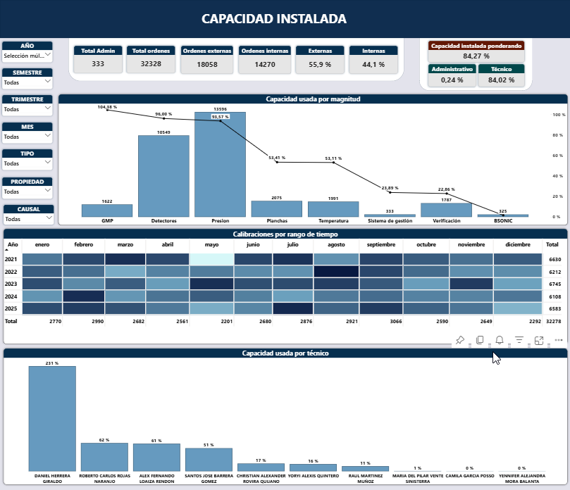
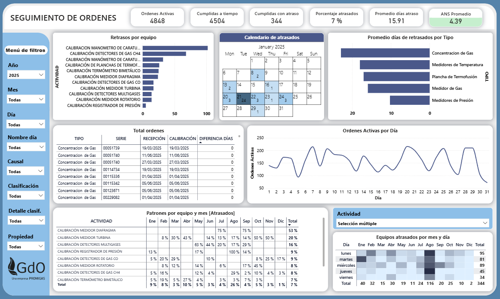
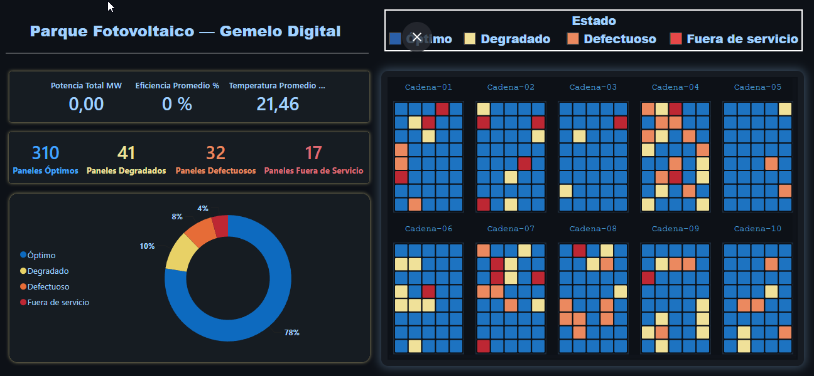

Soy Daniel Carabali, Ingeniero Electrónico especializado en análisis de datos, Power BI y automatización de procesos en el sector energético. Diseño tableros que centralizan información operativa, automatizan reportes y respaldan decisiones con evidencia, no con intuición.

Sobre mí
Soy Daniel Carabali, Ingeniero Electrónico con experiencia en análisis de datos, automatización de procesos y desarrollo de soluciones analíticas en el sector energético. Combino mi formación técnica con Power BI, Power Apps, Power Automate y Python para transformar datos operativos en información estratégica.
Durante mi práctica en Gases de Occidente automaticé la distribución de información metrológica, reduciendo procesos de más de una hora a menos de cinco minutos, y construí tableros que respaldaron decisiones reales como la redefinición de un Acuerdo de Nivel de Servicio. También desarrollé un modelo de Machine Learning en Python para anticipar variaciones en el consumo de gas industrial.
Busco integrar mi pasión por los datos y la tecnología en un equipo dinámico, aportando soluciones que generen impacto real en la toma de decisiones y la eficiencia organizacional.
Proyectos
Cada proyecto incluye un video de funcionamiento del tablero, donde se contextualiza un poco más acerca del dashboard.

Sistema integral para centralizar el control de calibraciones de equipos, monitorear el cumplimiento mensual y automatizar reportes y alertas por correo.

Monitoreo de la utilización de la capacidad operativa por magnitud y por técnico, con mapas de calor para detectar estacionalidad en la demanda.

Análisis de cumplimiento del Acuerdo de Nivel de Servicio del laboratorio, identificando causas operativas detrás de los retrasos en la entrega de equipos.

Tablero de monitoreo tipo gemelo digital para un parque solar simulado, con seguimiento del estado de cada panel por cadena (óptimo, degradado, defectuoso o fuera de servicio) y KPIs de potencia, eficiencia y temperatura.
Experiencia
Roles y proyectos donde he aportado valor a través de datos.
Formación complementaria en energías renovables (Fundación Carlos Slim) y energía solar y emprendimiento sostenible (UNIAJC & Club Rotary San Fernando), junto con cursos especializados en Power BI y DAX, y fundamentos de Machine Learning (Platzi).
Desarrollo de habilidades de comunicación intercultural enseñando español a estudiantes internacionales.
Contacto
Estoy abierto a oportunidades en análisis de datos y desarrollo de soluciones en Power BI. Escríbeme y respondo pronto.
Enviar mensaje